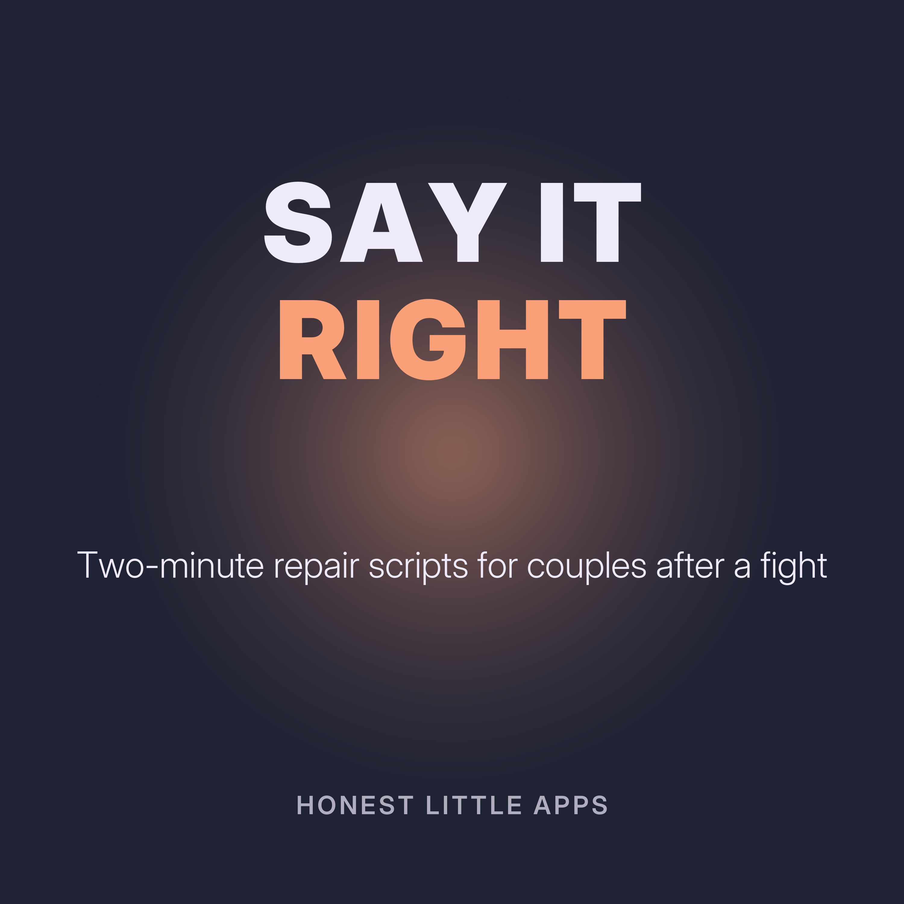

Say It Right: Two-Minute Repair for Couples
Short, practical episodes for the moments after an argument: how to ask for a break without walking out, how to apologize without excuses, and what to say when you feel misunderstood. About two minutes each. Not a substitute for counselling or for help if you feel unsafe.
Made by Honest Little Apps, the makers of UnFight: Couples & Marriage, a private iPhone app to pause an argument, find clearer words and decide what to do next. Narrated with a synthetic (text-to-speech) voice.
- Asking for a breakWhen a fight is heating up, stepping away can help. Walking out without a word usually makes it worse.
- An apology without excusesA real apology has three parts, and no but.
- When you feel misunderstoodFeeling misunderstood can make you repeat yourself louder. Try a different door.
- Bringing up something hardStarting gently changes how the whole conversation goes.
- Saying I'm not ready to talkSometimes you're just not ready, and that's okay. Silence without explanation can feel like punishment, though.
- Setting a boundary kindlyA boundary is about what you will do, not about controlling the other person.
- Saying thank you after a hard talkAfter a difficult conversation, end with appreciation, even if nothing is fully solved.